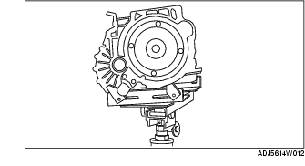
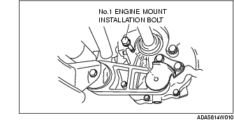

Automatic transaxle removal/installation [FN4A-EL]
1. Disconnect the negative battery cable.
2. Remove the battery, battery tray and battery tray bracket.
3. Remove the air cleaner cover. (See INTAKE-AIR SYSTEM REMOVAL/INSTALLATION [ZY].)
4. Remove the front tires and splash shield.
5. Remove the EGR pipe and hose. (See INTAKE-AIR SYSTEM REMOVAL/INSTALLATION [ZY].)
6. Drain the ATF. (See AUTOMATIC TRANSAXLE FLUID (ATF) REPLACEMENT [FN4A-EL].)
- • Improperly jacking a transaxle is dangerous. It can slip off the jack and may cause serious injury.
- • To prevent the torque converter and transaxle from separating, remove the transaxle without tilting it toward the torque converter.
7. Remove in the order shown in the figure.
8. Install in the reverse order of removal.
9. Add ATF to the specified level. (See AUTOMATIC TRANSAXLE FLUID (ATF) REPLACEMENT [FN4A-EL].)
10. Carry out the mechanical system test. (See MECHANICAL SYSTEM TEST [FN4A-EL].)
11. Carry out the road test. (See ROAD TEST [FN4A-EL].)

.
|
1
|
Input/turbine speed sensor connector
|
|
2
|
VSS connector
|
|
3
|
GND wiring harness
|
|
4
|
Transaxle connector
|
|
5
|
TR switch connector
|
|
6
|
GND wiring harness
|
|
7
|
Transaxle mounting bolt (upper side)
|
|
8
|
Starter
|
|
9
|
Stabilizer control link
|
|
10
|
Tie-rod end ball joint
(See Tie-rod End Removal Note.)
|
|
11
|
Lower arm ball joint
|
|
12
|
Drive shaft
|
|
13
|
Drive shaft
|
|
14
|
Joint shaft
|
|
15
|
Selector cable
|
|
16
|
Oil hose
|
|
17
|
No.1 engine mount
|
|
18
|
No.4 engine mount rubber
|
|
19
|
Torque converter installation nuts
|
|
20
|
Transaxle mounting bolt (lower side)
|
|
21
|
Transaxle
(See Transaxle Removal Note.)
(See Transaxle Installation Note.)
|
|
22
|
No.4 engine bracket
|
No.4 Engine Mount Removal Note
1. Remove the dipstick of engine.
2. Using the bolts part number 99794 1025 or M10× 1.25, length 25 mm {0.98 in} to install the SST to the position as shown in the figure.

- • When attaching the SST in the engine rear side, install a suitable nut between the engine and the SST.

Tightening torque
3. Install the SST using the following procedure.

-
(1) Install the right rear shaft of the SST to the bolt of the right shock absorber as shown in the figure.

- (2) Install the left rear shaft of the SST to the bolt of the left shock absorber. (Identical position to the right side)
-
(3) Install front foot No.1 to the right front shaft of the SST and insert it into the shroud panel in the position shown in the figure.

- (4) Install front foot No.1 to the left front shaft of the SST and insert it into the shroud panel (identical position to right side).
- (5) Adjust the positions of the SST side bars so that they are the same height (left and right) and horizontal.
- (6) Make sure each joint is securely tightened.
4. Support the engine using the SST.

5. Remove the battery tray bracket, No.4 engine mount rubber and bracket.
Torque Converter Nuts Removal Note
1. Using the flathead screwdriver, lock the drive plate.
2. Remove the torque converter nuts from the starter installation hole.

Transaxle Removal Note
1. Adjust the SST and lean the engine toward the transaxle.

2. Support the transaxle on a jack.
3. Remove the transaxle mounting bolts.
4. Remove the transaxle.

Transaxle Installation Note
1. Set the transaxle on a jack and lift it.
2. Install the transaxle mounting bolts.

Tightening torque
- A: 63.7-89.2 N·m
- {6.5-9.0 kgf·m, 47.0-65.7 ft·lbf}
- B: 37.3-52.0 N·m
- {3.8-5.3 kgf·m, 27.5-38.3 ft·lbf}
Torque Converter Nuts Installation Note
1. Using the flathead screwdriver, lock the drive plate.
- • Loosely and equally tighten the torque converter nuts, then further tighten them to the specified tightening torque.
2. Tighten the torque converter mounting nuts.

Tightening torque
No.4 Engine Mount Rubber Installation Note
1. Verify that the No.4 engine mount rubber is installed as shown.

2. Adjust the SST (engine support), and align the hole of the No.4 engine mount rubber with the stud bolt of transaxle.
3. Set the transaxle on a garage jack and lift it.
4. Tighten nuts A, B in the order of A to B.

Tightening torque
No.1 Engine Mount Installation Note
- • Align the transaxle bolt holes and the engine mount exactly. Any misalignment can result in bolts and bolt holes becoming damaged or stripped during installation.
1. Adjust the SST (engine support), and align the hole of the No.1 engine mount with the bolt hole of transaxle.
2. Tighten bolt.

Tightening torque